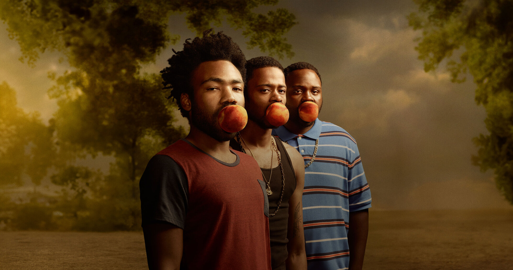

Atlanta cuenta con un total de 4 temporadas, cada una explorando diferentes aspectos de la vida de los personajes y la cultura del rap en Atlanta.
Temporada 1
La primera temporada se centra en la lucha de Earn para convertirse en el mánager de su primo Paper Boi y las dificultades que enfrentan en su camino hacia el éxito.
Temporada 2
La segunda temporada sigue a los personajes mientras navegan por las complejidades de la fama y la vida en Atlanta.
Temporada 3
La tercera temporada explora temas de identidad y pertenencia, mientras los personajes enfrentan nuevos desafíos.

Temporada 4
La cuarta temporada concluye la historia de los personajes, cerrando arcos narrativos y ofreciendo una reflexión sobre su viaje.
